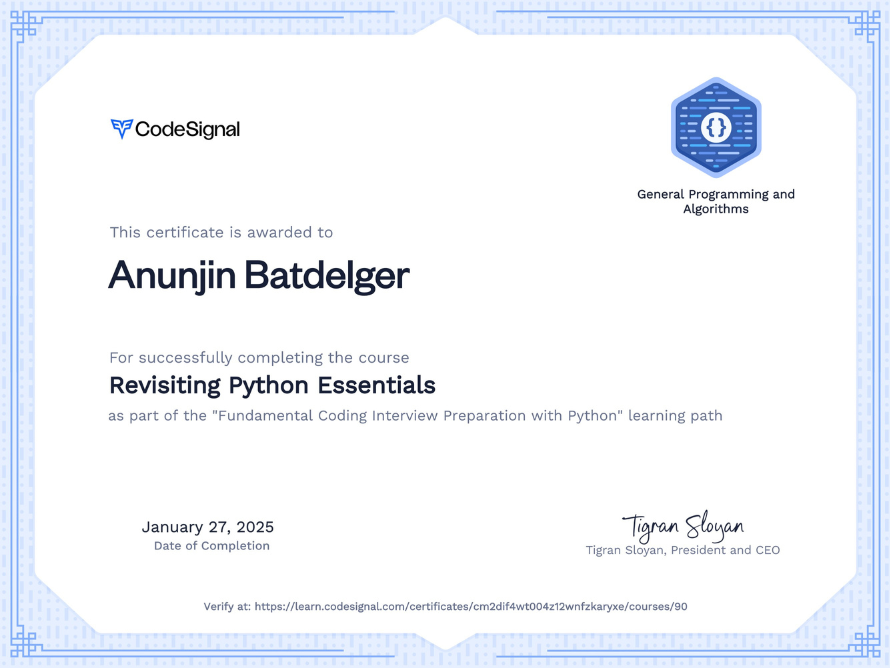

PORTFOLIO
✦ ✦ ✦

PORTFOLIO WEBSITE
Developed a portfolio website to store and display my projects.

Designed and implemented various test frameworks, working with internal testing APIs to enhance automation. Developed new features to improve testing efficiency, ensuring robust validation and seamless integration with existing systems. This project allowed me to apply my problem-solving skills.

Technical Interview prep
